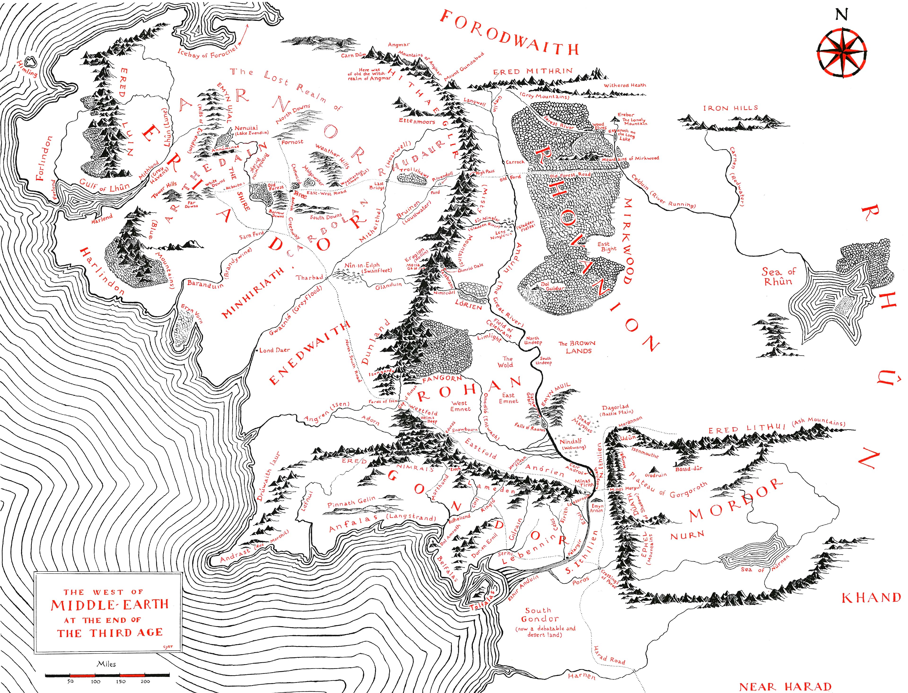

Wilderland
Tolkien's own hand-drawn map: round tree canopies, peaked mountains with shadow sides, blue rivers, decorative border.
Source art: Tolkien's Wilderland map, The Hobbit

Moon Letters
Sparse blue-ink sketch on aged parchment with a runic border and handwritten annotations. The red text only appears in moonlight.
Source art: Thror's Map, The Hobbit

Third Age
Dense engraving in black and red ink with forest hatching, ridge-line mountains, region labels, and an ornate compass rose.
Source art: Pauline Baynes' Map of Middle-earth